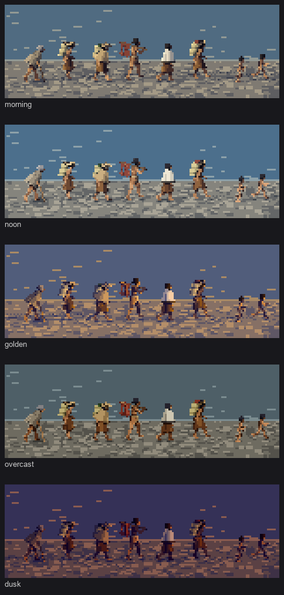
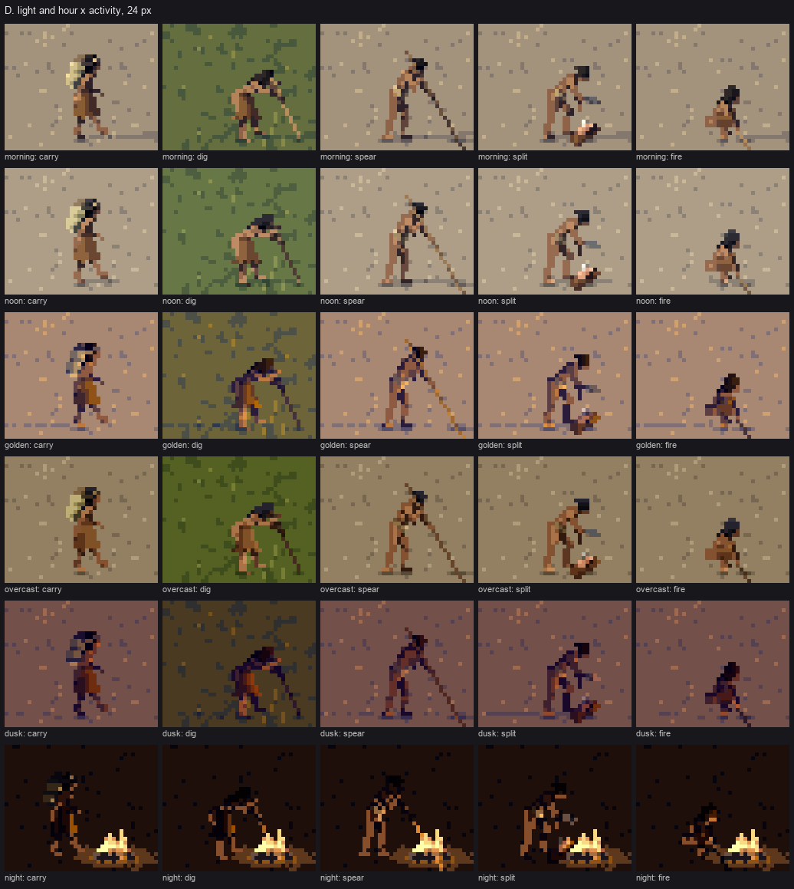
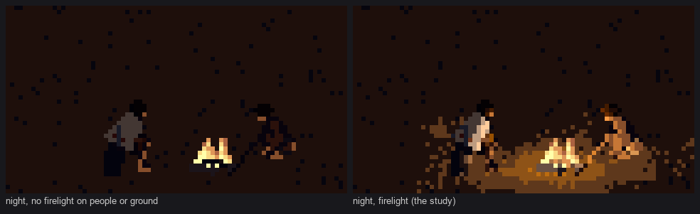
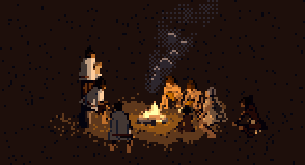
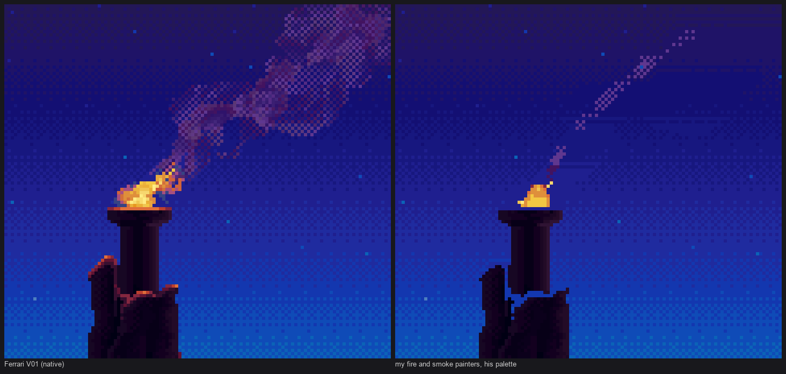
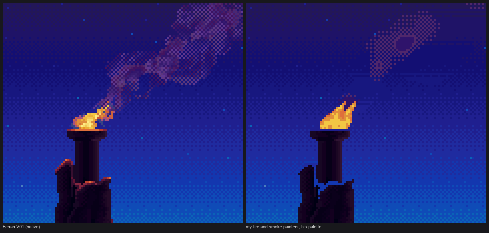
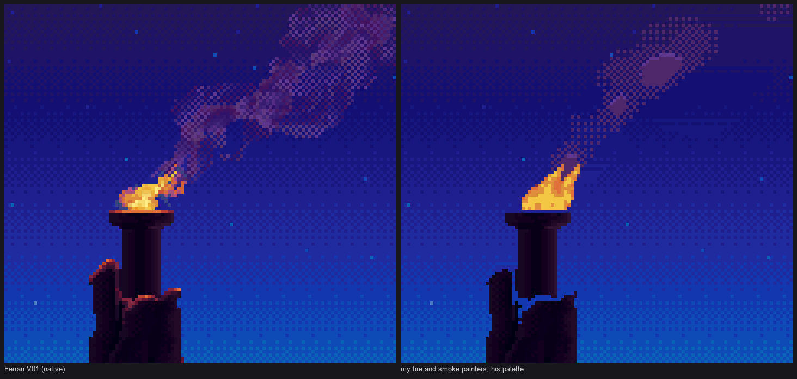

6. Light, hour and fire
Back to the tutorial. Code: pal.py (materials, ramp, palette, HOURS), render.shade (firelight), render.world_pos and render.fire_ground, setting.paint_fire and setting.paint_smoke, stage0_fire.py (the copy), in ~/work/pixelart-studies/elements/people/src/.
One index canvas, six palettes
Every pixel the renderer produces is an index, material × 8 + step, with steps 0–4. Nothing is coloured until the very end, when a palette turns indices into RGB. The studio's synthesis recommended this ("the palette is the light"), and it pays: the same canvas becomes morning, noon, golden hour, overcast, dusk or night by swapping one lookup table.
A material is three anchor colours (dark, mid, light). The naturalist's suggested colours were the starting points: cedar bark ~#8A5A3C, buckskin ~#C9A77C, cream wool ~#E8E0C8, cattail ~#C8B57A. They were adjusted by value, and the guide itself calls them "my suggestions from the materials, not measured". ramp builds five steps through the anchors in OKLab, then:
- pulls the lights' hue toward the sun colour and the darks' hue toward the sky's ambient colour, by amounts that vary with the hour;
- scales lightness by the hour's key.
HOURS = {
'noon': dict(sun='#fff8e8', amb='#8aa4cc', key=1.0, sky=('#78a8e0', '#d4e4f0'), warm=0.18, cool=0.28),
'morning': dict(sun='#ffe4b8', amb='#8898c8', key=0.95, sky=('#94bce8', '#e8e4dc'), warm=0.3, cool=0.34),
'golden': dict(sun='#ffb060', amb='#6060a8', key=0.92, sky=('#6a8ad0', '#f8c890'), warm=0.55, cool=0.5),
'overcast': dict(sun='#e0e4e4', amb='#98a0a8', key=0.86, sky=('#a8aeb6', '#d0d4d6'), warm=0.04, cool=0.12),
'dusk': dict(sun='#f08870', amb='#4a4088', key=0.66, sky=('#3e3e88', '#e8987e'), warm=0.5, cool=0.55),
'night': dict(sun='#ff9a40', amb='#1e2440', key=0.55, sky=('#0e1224', '#1e2438'), warm=0.6, cool=0.55),
}
...
warm = h.get('warm', 0.22) * t ** 1.2
cool = h.get('cool', 0.3) * (1 - t) ** 1.6
# temperature only: pull the chroma (a, b) toward the sun's / sky's hue, keep lightness
c[1:] = c[1:] * (1 - warm - cool) + sun[1:] * warm * 1.2 + amb[1:] * cool * 1.2
Tint the chroma, never the lightness. My first ramps tinted all three OKLab channels toward the ambient colour, and black hair came out slate blue: the sky's lightness had dragged the black up. The comment in the code is the fix.
Make the hours actually different. My first hour palettes differed so little that the hour sheet looked like one image five times. The warm/cool numbers above (from 0.04/0.12 overcast to 0.55/0.5 golden) are what separated them.

study. The carrying file under morning, noon, golden, overcast and dusk. Golden hour and dusk back-light it: orange rims, violet shadows, long checkered cast shadows. Overcast uses a top light and casts no shadows.

study. Sheet D: hour × activity, with night lit only by a fire.
Water takes the sky's colour into its ramp (the sky's top colour in its darks, the horizon in its lights), so a lake at golden hour is a golden-hour lake without a separate painter.
Night is firelight
At night the sun is off, every figure pixel starts in the shadow family, and the only light is a point source low in the hearth. That needs each pixel's position in the world. The z-buffer already has it, because the camera is orthographic with a known elevation:
def world_pos(sc):
ys, xs = np.mgrid[0:H, 0:W]
ce, se = math.cos(cv.e), math.sin(cv.e)
su = (sc.oy - (ys + 0.5)) / sc.scale # screen-up in units
dz = cv.z / sc.scale # depth toward the viewer in units
x = (xs + 0.5 - sc.ox) / sc.scale
y = su * ce + dz * se
z = -su * se + dz * ce
return np.stack([x, y, z], -1)
Then each pixel's firelight is its normal against the direction to the fire, over a soft falloff, and the brighter of sun and fire wins:
for fp, reach in fire:
dv = np.asarray(fp)[None, None, :] - wpos
dist = np.linalg.norm(dv, axis=-1)
dn = dv / np.maximum(dist, 1e-6)[..., None]
# wrapped: firelight is big and soft, it reaches round onto surfaces edge-on to it
lf = np.maximum(((n * dn).sum(-1) + 0.6) / 1.6, 0) / (1 + (dist / reach) ** 2)
fs = np.where(lf > 0.5, 4 if (hi and size_px >= 22) else 3, np.where(lf > 0.28, 3,
np.where(lf > 0.12, 2, 0)))
step = np.maximum(step, fs)
The wrap (n·d + 0.6) / 1.6 was a measured fix. Without it, firelit cloth stayed grey. I measured the firelight term over the seated woman's blanket: a mean of 0.037. Seen from the side, most of a figure's visible surface faces the camera, not the fire, so plain n·d is near zero almost everywhere. A fire is a big soft source that reaches round onto edges, and the wrap says so.
The night palette does the rest. Its low steps are dark and cool, its high steps bright and warm:
if hour == 'night':
c[0] *= (0.42, 0.5, 0.85, 0.95, 1.0)[i] # dark cool ambient, bright warm firelight
So "lit by the fire" and "in the dark" are the two families, as they are in de La Tour and in the moodboard's Sami tent.
The ground pool. The ground around the hearth lifts by up to three steps with distance, in bands broken by a little noise, with its radius warped by smooth noise so it's an irregular pool, not a ring. My first pool was a stamped checker ellipse that read as a net.
The fire itself is emissive. It uses the noon ramp at every hour. At dusk it had gone through the hour palette like everything else and come out dimmer than the blankets.

fig. The same two people by a hearth at night, without and with firelight. The faces and chests turned to the fire go warm; the backs stay dark.

fig. The fire circle at 32 px: sitting, tending, weaving, a baby, a child; the smoke rising and leaning.
A master copy of Ferrari's fire
Ferrari painted fire in Living Worlds V01: a torch on a peak at night, its smoke drifting across the stars. I loaded his index map (the willow student's lw.py) and measured it before copying:
d = load('V01'); idx = d['idx'][0:110, 300:420]; pal = d['pal']
smoke = (idx >= 200) & (idx <= 215)
reg = binary_closing(smoke, iterations=2)
print('smoke px', smoke.sum(), 'share in region', smoke[reg].mean()) # 1255, 0.70
nb = np.zeros_like(smoke)
for dy, dx in ((1, 0), (-1, 0), (0, 1), (0, -1)):
nb |= np.roll(np.roll(smoke, dy, 0), dx, 1)
print('isolated (checker) share', (smoke & ~nb).sum() / smoke.sum()) # 0.40
What his pixels do:
- The smoke is a 14-step purple ramp with a mean luminance of 48 against a sky of 30–60: close to the sky in value, shifted in hue.
- It fills 70% of its region, and 40% of its pixels are isolated checker pixels at the margins.
- It starts right at the flame, continuous, and billows to about 45 px wide 60 px above the source.
- The flame is a mottled clump of yellows, oranges and reds, leaning downwind, with single sparks trailing off.
- The rock tops near the brazier carry 1-px orange rims.
I copied it with my own painters, on his sky with his plume removed, mapping my smoke and fire steps to his palette indices (stage0_fire.py). Seven rounds:

nb084. Round 1: a thin diagonal of checker.

nb086. A widening envelope and one octave of noise: a balloon on a string.

nb088. Continuous from the flame, with brighter smoke colours: still a tube with a blob. Two octaves of noise came next.

study. The final copy: his (left) and mine (right).
The smoke painter as it ended:
t = np.clip((cy - (ys + 0.5)) / max(L, 1), 0, 1.5) # 0 at the source, 1 at the top
xc = cx + wind * drift * L * (t ** 1.6) * 0.9 + np.sin(t * 5 + phase * 6.28) * size_px * 0.06 * t
half = L * (0.07 + 0.34 * t ** 0.85) # rises, then bends downwind and widens
env = np.clip(1 - np.abs(xs + 0.5 - xc) / np.maximum(half, 0.5), 0, 1) * (t > 0) * np.clip(1.25 - t, 0, 1)
n1 = 0.7 * octave(max(1.0, L * 0.08), 1) + 0.45 * octave(max(0.8, L * 0.035), 2) # billows, advected by phase
D = env ** 0.4 * (0.74 + 0.42 * n1 * np.minimum(1, t * 2.5)) * (1 - 0.2 * t)
solid = D > 0.66 # his solid core
mid = (D > 0.38) & ~solid & ((xs + ys) % 2 == 0) # his 50% checker margins
thin = (D > 0.2) & (D <= 0.38) & (xs % 2 == 0) & (ys % 2 == 0) # 25% sparse at the thin ends
top = solid & ~np.roll(solid, 1, 0) # lit upper edges
The flame is two or three teardrop tongues, each a hot core inside a cooler rim. Their heat is mottled by smooth noise so the edge is ragged, the tips lean with the wind and flicker with the phase, and sparks break off the cooler tips. Any scene pixel nearer than the fire hides it, so people in front of the hearth stand in front of the flame.
Honest comparison: it reads as a plume now, but his has more tones inside the lobes and broader, more sculpted billows. The studio critic, looking at an earlier round: "Yours is a smooth tube ending in ring shapes, which read as smoke rings or bubbles." That's still partly true. His flame is chunkier and less tongue-shaped than mine.
A bug in the copy's own harness. To lay my plume on his sky I cleared his plume and flame pixels by index. Only on the final run did I see that this also cleared his firelit orange rims on the rocks below the brazier, which use the same indices as the flame. For six rounds my side had dark rocks and I hadn't noticed. When you mask a master's pixels by index, look at what else shares the index. The critic's round-5 note ("He lights the stone") is about exactly those pixels; my night scenes light people but still not the hearth stones.
Where it falls short
- The hearth stones aren't lit.
- The smoke is a plume, not Ferrari's sculpted billows.
- There's no firelight inside houses. The plank-house interior, the most firelit place in the naturalist's descriptions, was never painted.
- Dusk and golden hour shadow colours are my choices, not measured from photographs of those hours on this coast.